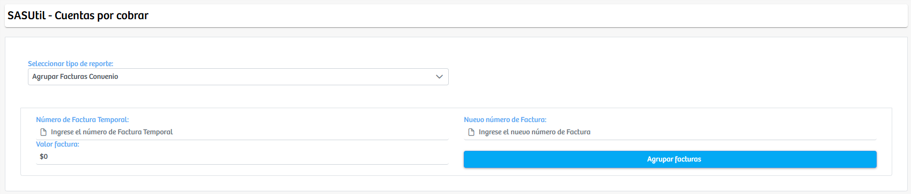
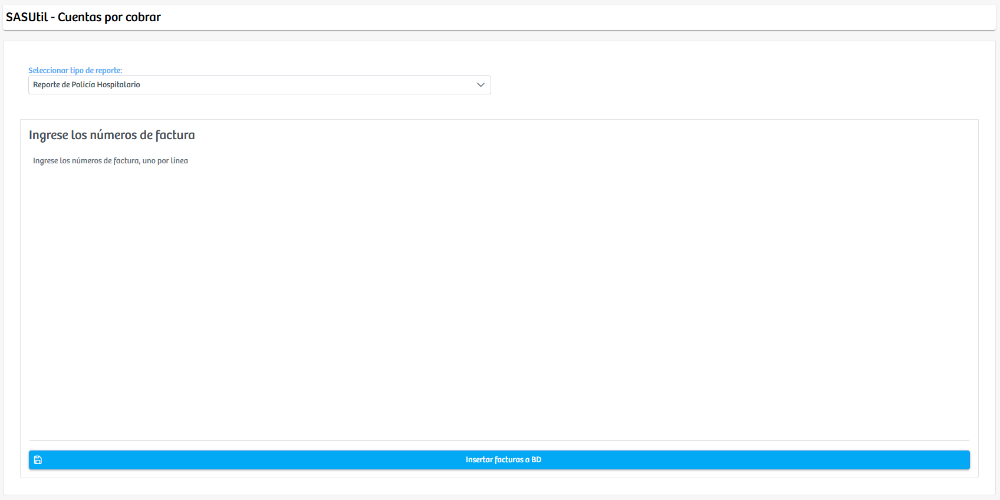

Modulos Sas-Web
Funcionalidades
Consultar Reliquidaciones Convenio
El módulo Consultar Reliquidaciones Convenio está diseñado para facilitar la generación y agrupación de facturas, según las necesidades del proceso de facturación institucional. Desde esta interfaz el usuario puede seleccionar, mediante un menú desplegable, uno de los cuatro tipos de reporte disponibles: Agrupar Facturas Convenio, Agrupar Facturas Moderadora, Reporte de Policía Hospitalario y Reporte de Policía Ambulatorio.
 Este módulo, en esencia, actúa como una herramienta operativa para crear y consolidar facturas, apoyando la generación de reportes contables y administrativos sin funciones de consulta o seguimiento, enfocándose exclusivamente en la construcción y agrupación de facturación según el tipo de reporte seleccionado.